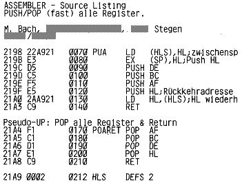

Nascom Journal |
Oktober 1981 · Ausgabe 10 |
Jeder Abonnent kann kostenlose Kleinanzeigen bis 40 Wörter aufgeben!
| Verkaufe Zeap 2, NASDIS, DEBUG auf original 8 X 1 K EPROM | DM | 250.– |
| Siemens T 100, Tischgehäuse 75 Bd, Großbuchstaben | DM | 200.– |
Wer hat Interesse an Software-/Hardware-/ Informationsaustausch??
Uwe Fricke Tel. _____/______
____________ __
____ _________
Suche gegen Gebot Assemblerlisting +Manual-Kopie von Nassys(i).- Wer
hat in Hamburg Interesse an einem Nascom-User-Treffen?
F.-L. Bruhns
_________ __ _
____ _______ __
| Verkaufe Nasbug T2, T4, TINY-BASIC, GRAPH IC-ROM je EPROM (2708) | DM | 20.– |
| incl. original Dokum. | ||
| Programmiere Sonderzeichen (64 max) für Nascom 2 -ROM (2716) | DM | 40.– |
Elektrotechnikstudent sucht Nascom 1 -Benutzer im Raum Kiel zwecks
Erfahrungsaustausch.
Hans-Jürgen Plath (bei ________)
_____ _______._
____ ____
Suche ZEAP 2.0 Assembler mit :=Command-Funktion, Nassys 3 incl.
Listing
Rüdiger Maurer Tel. _____/____
____________ _
____ ___________ _
| Verkaufe Nascom 2, 32 K, mit NASPEN und TOOL-KIT in orig. Pultgehäuse, betriebsbereit | DM | 1200.– |
| Verkaufe Nascom 1 , 32 K RAM, Graphic, Tastaturerweiterung; Nasbug-Nassys umschaltbar; 20 K ROM (8K BASIC,2K Toolkit,3K Assembler ZEAP 2 , 2K Disassembler NASDIS, 1K Debugger) Preis VB | DM | 1200.– |
Verkaufe Nascom 1 mit Nassys 1, 3 Amp, Netzteil, Buffer-Board,
Cass.recorder, Schreibm.-Interface („Hofer-Drucker“) und div.
Ass.-Programmen: DM 1000.–
Martin Riedel, _______ ___/______
| Verkaufe Nassys 5 voll interruptfähig, mit 4 neuen Befehlen in 2716
(5V) DM 50.– in 2X2708 | DM | 65.– |
Unterprogramme sollten die Register, die sie benutzen und die nicht zur Übergabe von Parametern dienen, unverändert lassen. Deshalb besteht der Anfang der meisten Unterprogramme aus etlichen PUSHs und das Ende aus POPs. Um in größeren Programmen Platz zu sparen – und zwar sowohl im Objektkode als auch im Quellkode, wobei letzteres die „Schallgrenze“ für Programme über ca. 4KB darstellt – habe ich die folgenden beiden Programme benutzt. Das erste „PUA“ rettet alle Register (IX & IY können leicht noch dazu) auf den Stack. Dies ist nicht so trivial, wie man zunächst denkt, denn auf dem Stack steht ja zunächst die Rückkehradresse von „PUA“. Die vorgestelle Version speichert den Inhalt von HL in einem Speicherplatz „HLS“ ab, der natürlich nicht im Eprom sein darf. Durch schauderhafte Stackmanipulationen könnte man das zwar auch umgehen, aber es wäre deutlich länger & langsamer.
Am Anfang eines Unterprogrammes steht dann „CALL PUA“, Das Unterprogramm wird nicht mit RET abgeschlossen, sondern mit „JP POARET“. In dem simplen „POARET“ werden die Register zurückgeladen und der „RET“-Befehl ausgeführt, im Unterprogramm braucht man also kein „RET“,
Überhaupt möchte ich in diesem Zusammenhang darauf hinweisen, daß man beim Aufruf eines zweiten Unterprogrammes am Ende des ersten Unterprogrammes mit „JP UP2“ statt „CALL UP2, RET“ den gleichen Effekt erzielt.
| Seite 26 von 28 |
|---|